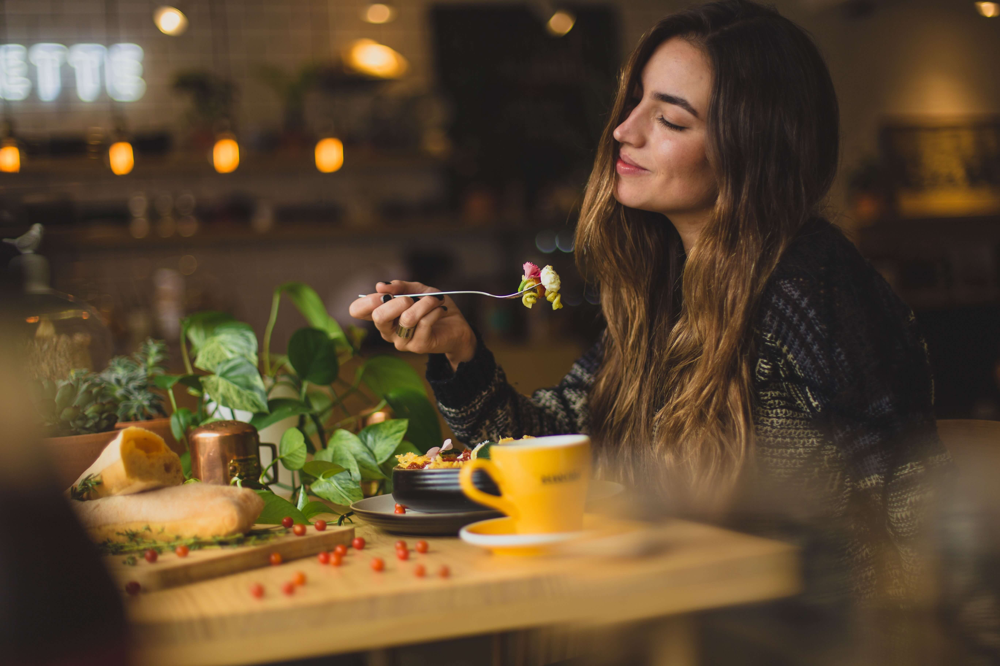

Comunidad
Maria José
Orgullosa de mi pizza que hice el día de hoy. Mi hija la súper disfruto!!
Gracias a la receta de @AbuelaPepa
¡100% sin tacc y ella feliz!

Agostina
Es viernes y se disfruta al máximo en "We are Open"
Las mejores pastas sin tacc. Lo súper recomiendo!!
#riquisimo #afterOffice #merecido100pre
